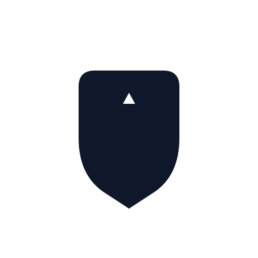
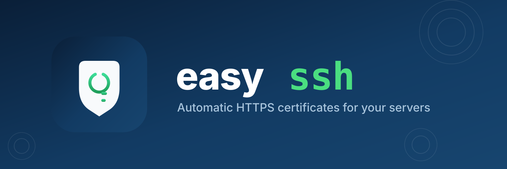

主图标 logo-mark.svg
assets/logo/logo-mark.svg — 应用图标 / favicon / 头像
主标(浅色) logo.svg
assets/logo/logo.svg — 文档 / 网站浅色区域
主标(深色) logo-dark.svg
assets/logo/logo-dark.svg — 深色 UI / 深色背景
单色黑 logo-mark-mono.svg

assets/logo/logo-mark-mono.svg — 打印 / 水印 / 单色 UI
单色白 logo-mark-white.svg

assets/logo/logo-mark-white.svg — 深色背景水印
仓库横幅 banner.svg (1500×500)

assets/logo/banner.svg — GitHub 仓库封面 / README 顶部 / 社交横幅
备选概念 B variant-terminal.svg
assets/logo/variant-terminal.svg — 终端 >_ + 盾牌对勾(备选,未采用)
favicon.ico / favicon-*.png
favicon.ico / favicon-16/32/48/64.png — 浏览器标签页;appicon-256/512.png — 桌面/Wails 图标